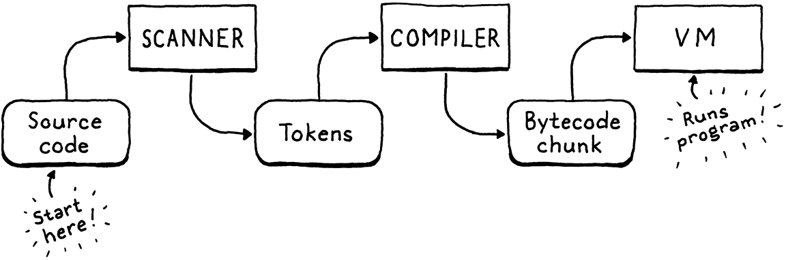
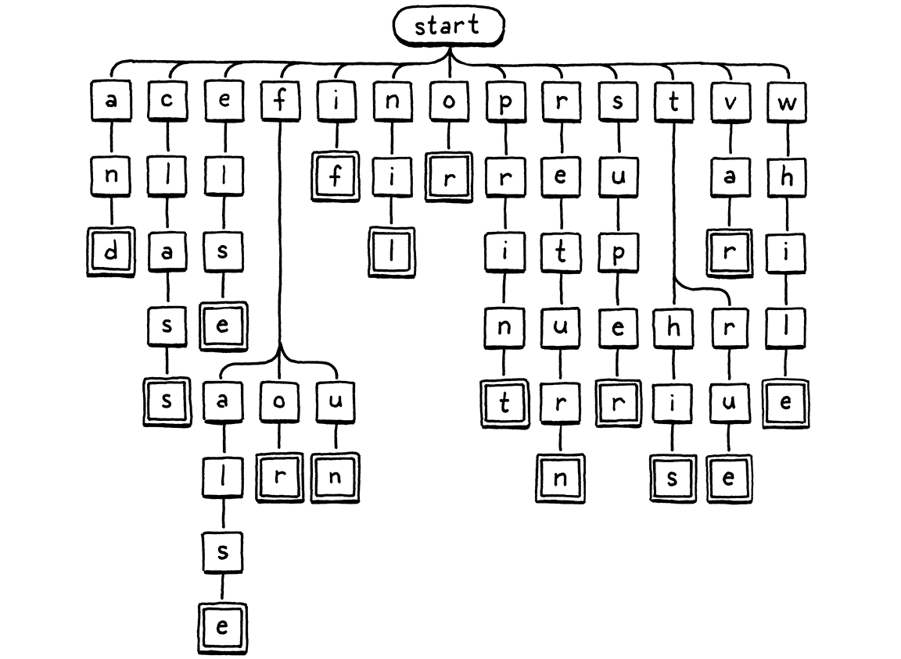

按需扫描
文学是在只有二十六个注音符号、十个阿拉伯数字和大约八个标点符号的水平线上进行的特殊排列。
-- Kurt Vonnegut,Like Shaking Hands With God: A Conversation about Writing
我们的第二个解释器 clox 具有三个阶段——扫描器、编译器和虚拟机。数据结构连接每对阶段。token从扫描器流向编译器，字节码块从编译器流向 VM。我们的块和VM实现接近尾声。现在，我们要回到开始并构建一个生成token的扫描器。在下一章中，将用字节码编译器将两端连接在一起。

我承认，这不是本书中最激动人心的章节。对于同一种语言的两种实现，必然会有一些冗余。与 jlox 的扫描器相比，我确实发现了一些有趣的差异。继续阅读以了解它们是什么。
16.1 启动解释器
现在我们正在构建前端，可以让 clox 像真正的解释器一样运行。不再有手写的字节码块。是时候加载 REPL 和脚本了。把里面的大部分代码删掉，换成main()：
int main(int argc, const char* argv[]) {
initVM();
if (argc == 1) {
repl();
} else if (argc == 2) {
runFile(argv[1]);
} else {
fprintf(stderr, "Usage: clox [path]\n");
exit(64);
}
freeVM();
return 0;
}
// main.c, in main(), replace 26 lines
如果您不向可执行文件传递任何参数，将进入 REPL。单个命令行参数被理解为要运行的脚本的路径。
代码测试一个和两个参数，而不是零和一个，因为第一个参数
argv始终是正在运行的可执行文件的名称。
我们需要一些系统头文件，所以引入。
#include <stdio.h>
#include <stdlib.h>
#include <string.h>
#include "common.h"
// main.c, add to top of file
接下来，我们启动 REPL 并进行 REPL-ing。
#include "vm.h"
static void repl() {
char line[1024];
for (;;) {
printf("> ");
if (!fgets(line, sizeof(line), stdin)) {
printf("\n");
break;
}
interpret(line);
}
}
// main.c
高质量的 REPL 可以优雅地处理跨多行的输入，并且没有硬编码的行长度限制。这里的 REPL 有点简朴，但对我们的目的来说没问题。
真正的工作发生在interpret().我们很快就会谈到这一点，但首先让我们来处理加载脚本。
static void runFile(const char* path) {
char* source = readFile(path);
InterpretResult result = interpret(source);
free(source);
if (result == INTERPRET_COMPILE_ERROR) exit(65);
if (result == INTERPRET_RUNTIME_ERROR) exit(70);
}
// main.c, add after repl()
我们读取文件并执行生成的 Lox 源代码字符串。然后，根据结果，我们适当地设置退出代码，因为我们是一丝不苟的工具构建者，并且关心这样的小细节。
我们还需要释放源代码字符串，因为readFile()动态分配它并将所有权传递给它的调用者。该函数如下所示：
C 要求我们不仅要显式地管理内存，还要在精神上管理内存。我们程序员必须记住所有权规则并在整个程序中手动实现它们。Java 只是为我们做这件事。C++ 为我们提供了直接对策略进行编码的工具，以便编译器为我们验证它。
我喜欢 C 的简单性，但我们为此付出了真正的代价——这种语言要求我们更加认真。
static char* readFile(const char* path) {
FILE* file = fopen(path, "rb");
fseek(file, 0L, SEEK_END);
size_t fileSize = ftell(file);
rewind(file);
char* buffer = (char*)malloc(fileSize + 1);
size_t bytesRead = fread(buffer, sizeof(char), fileSize, file);
buffer[bytesRead] = '\0';
fclose(file);
return buffer;
}
// main.c, add after repl()
和其他 C 代码一样，它比看起来应该付出更多的努力，尤其是对于一种专门为操作系统设计的语言。困难的部分是我们想要分配一个足够大的字符串来读取整个文件，但是在读取它之前不知道文件有多大。
这里的代码是解决这个问题的经典技巧。打开文件，但在读取它之前，使用fseek().然后调用ftell()它告诉从文件开始算起有多少字节。既然我们一直寻找（寻求）到最后，那就是大小。倒回到开头，分配一个size的字符串，并在一个批次中读取整个文件。
好吧，那个尺寸加一。永远要记住为空字节腾出空间。
所以我们完成了，对吧？不完全的。与 C 标准库中的大多数调用一样，这些函数调用可能会失败。如果这是 Java，失败将作为异常抛出并自动展开堆栈，因此我们实际上不需要处理它们。在 C 中，如果我们不检查它们，它们就会默默地被忽略。
这并不是一本关于良好 C 编程实践的书，但我讨厌鼓励不良风格，所以让我们继续处理错误。这对我们有好处，就像吃蔬菜或使用牙线一样。
幸运的是，如果发生故障，我们不需要做任何特别聪明的事情。如果不能正确读取用户的脚本，真正能做的就是告诉用户并优雅地退出解释器。首先，我们可能无法打开文件。
FILE* file = fopen(path, "rb");
if (file == NULL) {
fprintf(stderr, "Could not open file \"%s\".\n", path);
exit(74);
}
fseek(file, 0L, SEEK_END);
// main.c, in readFile()
如果文件不存在或用户无权访问它，就会发生这种情况。这很常见——人们总是输错路径。
这种失败更为罕见：
char* buffer = (char*)malloc(fileSize + 1);
if (buffer == NULL) {
fprintf(stderr, "Not enough memory to read \"%s\".\n", path);
exit(74);
}
size_t bytesRead = fread(buffer, sizeof(char), fileSize, file);
// main.c, in readFile()
如果我们甚至不能分配足够的内存来读取 Lox 脚本，用户可能会担心更大的问题，但我们应该尽最大努力至少让他们知道。
最后，读取本身可能会失败。
size_t bytesRead = fread(buffer, sizeof(char), fileSize, file);
if (bytesRead < fileSize) {
fprintf(stderr, "Could not read file \"%s\".\n", path);
exit(74);
}
buffer[bytesRead] = '\0';
// main.c, in readFile()
这也不太可能。实际上，对 fseek()、ftell() 和 rewind()的调用在理论上也可能会失败，但我们不要离题太远，好吗？
即使是老好人
printf()也会失败。是的。但您处理了多少次该错误？
16.1.1 打开编译管道
我们已经获得了Lox 源码字符串，所以现在我们准备好设置一个管道来扫描、编译和执行它。它由 interpret()驱动。现在，该函数运行旧的硬编码测试块。让我们将它更改为更接近其最终化的东西。
void freeVM();
InterpretResult interpret(const char* source);
void push(Value value);
// vm.h, function interpret(), replace 1 line
之前我们传入的是 Chunk，现在我们传入的是源代码字符串。这是新的实现：
InterpretResult interpret(const char* source) {
compile(source);
return INTERPRET_OK;
}
// vm.c, function interpret(), replace 4 lines
在本章中我们不会构建实际的编译器，但我们可以开始布局它的结构。它存在于一个新模块中。
#include "common.h"
#include "compiler.h"
#include "debug.h"
// vm.c
现在，其中的一个函数声明如下：
#ifndef clox_compiler_h
#define clox_compiler_h
void compile(const char* source);
#endif
// compiler.h, create new file
这个签名会改变，但它让我们继续前进。
编译的第一阶段是扫描——我们在本章中正在做的事情——所以现在编译器所做的就是设置它。
#include <stdio.h>
#include "common.h"
#include "compiler.h"
#include "scanner.h"
void compile(const char* source) {
initScanner(source);
}
// compiler.c, create new file
这自然也会在后面的章节中完成。
16.1.2 扫描
在我们开始编写有用的代码之前，还需要搭建一些脚手架。首先，一个新的头文件：
#ifndef clox_scanner_h
#define clox_scanner_h
void initScanner(const char* source);
// #endif
及其对应的实现：
#include <stdio.h>
#include <string.h>
#include "common.h"
#include "scanner.h"
typedef struct {
const char* start;
const char* current;
int line;
} Scanner;
Scanner scanner;
// scanner.c, create new file
当扫描器仔细检查用户的源代码时，它会跟踪它走了多远。就像对 VM 所做的那样，将该状态包装在一个结构中，然后创建该类型的单个顶级模块变量，这样就不必将它传递给所有不同的函数。
令人惊讶的是，只有很少字段。start指针标记当前正在扫描的词素的开始，并指向current正在查看的当前字符。

在这里，我们正在扫描标识符
bacon。当前字符是o，我们最近消费的字符是c。
有一个line字段来跟踪当前词位在哪一行以进行错误报告。就是这样！甚至不保留指向源代码字符串开头的指针。扫描器通过代码一次，然后完成。
因为有一些状态，我们应该初始化它。
void initScanner(const char* source) {
scanner.start = source;
scanner.current = source;
scanner.line = 1;
}
// scanner.c, add after variable scanner
我们从第一行的第一个字符开始，就像一个蹲在起跑线上的跑步者。
16.2 一次一个token
在 jlox 中，当发令枪响起时，扫描器抢先一步并急切地扫描整个程序，返回一个token list。这对 clox 来说是一个挑战。我们需要某种可增长的数组或列表来存储token。我们需要管理分配和释放token以及集合本身。那是很多代码，还浪费很多内存。
在任何时候，编译器只需要一两个token——记住我们的语法只需要一个前瞻标记——所以我们不需要同时保留它们。相反，最简单的解决方案是在编译器需要之前不扫描token。当扫描器提供一个时，它按值返回token。它不需要动态分配任何东西——它可以只在 C 堆栈上传递token。
不幸的是，我们还没有一个可以向扫描器询问token的编译器，因此扫描器将坐在那里什么都不做。为了让它付诸行动，我们将编写一些临时代码来驱动它。
initScanner(source);
int line = -1;
for (;;) {
Token token = scanToken();
if (token.line != line) {
printf("%4d ", token.line);
line = token.line;
} else {
printf(" | ");
}
printf("%2d '%.*s'\n", token.type, token.length, token.start);
if (token.type == TOKEN_EOF) break;
}
}
// compiler.c in compile()
格式字符串中的那个
%.*s是一个巧妙的功能。通常，您可以通过在格式字符串中放置一个数字来设置输出精度——要显示的字符数。使用*代替 可以让您将精度作为参数传递。因此该printf()调用会在 处打印token.length字符串的第一个字符token.start。我们需要这样限制长度，因为词素指向原始源字符串并且末尾没有终止符。
这是无限循环。每经过一个循环，它就会扫描一个token并打印出来。当它到达一个特殊的“文件结尾”标记或错误时，它会停止。例如，如果我们在这个程序上运行解释器：
print 1 + 2;
它打印出来：
1 31 'print'
| 21 '1'
| 7 '+'
| 21 '2'
| 8 ';'
2 39 ''
第一列是行号，第二列是标记类型的数值，最后是词素。第 2 行的最后一个空词素是 EOF 标记。
是的，token类型的原始索引并不完全是人类可读的，但它是 C 给我们的全部。
本章剩余部分的目标是通过实现这个关键函数来使代码块工作：
void initScanner(const char* source);
Token scanToken();
#endif
// scanner.h, add after initScanner()
每次调用都会扫描并返回源代码中的下一个token。token看起来像这样：
#define clox_scanner_h
typedef struct {
TokenType type;
const char* start;
int length;
int line;
} Token;
void initScanner(const char* source);
// scanner.h
它与 jlox 的 Token 类非常相似。我们有一个枚举来标识它是什么类型的token——数字、标识符、+运算符等。枚举实际上与 jlox 中的相同，所以让我们敲定整个事情。
#ifndef clox_scanner_h
#define clox_scanner_h
typedef enum {
// Single-character tokens.
TOKEN_LEFT_PAREN, TOKEN_RIGHT_PAREN,
TOKEN_LEFT_BRACE, TOKEN_RIGHT_BRACE,
TOKEN_COMMA, TOKEN_DOT, TOKEN_MINUS, TOKEN_PLUS,
TOKEN_SEMICOLON, TOKEN_SLASH, TOKEN_STAR,
// One or two character tokens.
TOKEN_BANG, TOKEN_BANG_EQUAL,
TOKEN_EQUAL, TOKEN_EQUAL_EQUAL,
TOKEN_GREATER, TOKEN_GREATER_EQUAL,
TOKEN_LESS, TOKEN_LESS_EQUAL,
// Literals.
TOKEN_IDENTIFIER, TOKEN_STRING, TOKEN_NUMBER,
// Keywords.
TOKEN_AND, TOKEN_CLASS, TOKEN_ELSE, TOKEN_FALSE,
TOKEN_FOR, TOKEN_FUN, TOKEN_IF, TOKEN_NIL, TOKEN_OR,
TOKEN_PRINT, TOKEN_RETURN, TOKEN_SUPER, TOKEN_THIS,
TOKEN_TRUE, TOKEN_VAR, TOKEN_WHILE,
TOKEN_ERROR, TOKEN_EOF
} TokenType;
typedef struct {
// scanner.h
除了为所有名称加上前缀TOKEN_（因为 C 在顶级名称空间中抛出枚举名称）之外，唯一的区别是额外的TOKEN_ERROR类型。那是什么？
在扫描过程中只会检测到几个错误：未终止的字符串和无法识别的字符。在 jlox 中，扫描器会自行报告这些信息。在 clox 中，扫描器为该错误生成一个合成的“错误”标记，并将其传递给编译器。这样，编译器就知道发生了错误，并且可以在报告错误之前启动错误恢复。
clox 的 Token 类型的新颖之处在于它如何表示词素。在 jlox 中，每个 Token 将词素存储为自己单独的小 Java 字符串。如果我们为 clox 这样做，我们就必须弄清楚如何管理这些字符串的内存。这尤其困难，因为我们按值传递token——多个token可能指向同一个词素字符串。所有权变得奇怪。
所以，我们使用原始源字符串作为字符存储。我们用一个指向它的第一个字符的指针和它包含的字符数来表示一个词素。这意味着我们根本不需要担心管理词素的内存，我们可以自由地复制token。只要主要源代码字符串比所有token都长，一切正常。
我不想显得轻率。我们确实需要考虑并确保远在“主”模块中创建的源字符串具有足够长的生命周期。这就是为什么在
interpret()完成代码执行并返回runFile()之前不释放字符串 的原因。
16.2.1 扫描tokens
我们已准备好扫描一些token。我们将努力完成完整的实现，从这里开始：
Token scanToken() {
scanner.start = scanner.current;
if (isAtEnd()) return makeToken(TOKEN_EOF);
return errorToken("Unexpected character.");
}
// scanner.c, add after initScanner()
由于每次调用此函数都会扫描一个完整的token，因此当进入该函数时，我们知道我们正处于一个新token的开头。因此，设置scanner.start为指向当前字符，以便记住将要扫描的词素从哪里开始。
然后检查是否已经到达源代码的末尾。如果是这样，返回一个 EOF token并停止。这是一个token值，它向编译器发出停止请求更多token的信号。
如果我们还没有走到最后，我们会做一些...东西...扫描下一个token。但是还没有编写该代码。但很快就会谈到这一点。如果该代码未成功扫描并返回token，那么将到达函数的末尾。这一定意味着处于扫描器无法识别的字符处，因此为此返回一个错误标记。
这个函数依赖于辅组函数，其中大部分都是 jlox 熟悉的。第一：
static bool isAtEnd() {
return *scanner.current == '\0';
}
// scanner.c, add after initScanner()
我们要求源字符串是良好的以 null 结尾的 C 字符串。如果当前字符是空字节，那么已经到了结尾。
要创建token，有这个类似构造函数的函数：
static Token makeToken(TokenType type) {
Token token;
token.type = type;
token.start = scanner.start;
token.length = (int)(scanner.current - scanner.start);
token.line = scanner.line;
return token;
}
// scanner.c, add after isAtEnd()
它使用扫描器start和current指针来捕获token的词位。它设置了几个其他明显的字段，然后返回token。它有一个用于返回错误标记的姊妹函数。
static Token errorToken(const char* message) {
Token token;
token.type = TOKEN_ERROR;
token.start = message;
token.length = (int)strlen(message);
token.line = scanner.line;
return token;
}
// scanner.c, add after makeToken()
本章的这一部分非常枯燥，所以这是一张蝾螈的照片。

唯一的区别是“lexeme”指向错误消息字符串而不是指向用户的源代码。同样，我们需要确保错误消息停留的时间足够长，以便编译器能够读取它。实际上，我们只使用 C 字符串文字调用此函数。那些是不变的和永恒的，所以还好。
我们现在所拥有的基本上是一个用于具有空词法语法的语言的工作扫描器。由于文法没有产生式，所以每个字符都是一个错误。这并不是一种有趣的编程语言，所以让我们填写规则。
16.3 Lox 的词法
最简单的标记只是一个字符。我们像这样识别它们：
if (isAtEnd()) return makeToken(TOKEN_EOF);
char c = advance();
switch (c) {
case '(': return makeToken(TOKEN_LEFT_PAREN);
case ')': return makeToken(TOKEN_RIGHT_PAREN);
case '{': return makeToken(TOKEN_LEFT_BRACE);
case '}': return makeToken(TOKEN_RIGHT_BRACE);
case ';': return makeToken(TOKEN_SEMICOLON);
case ',': return makeToken(TOKEN_COMMA);
case '.': return makeToken(TOKEN_DOT);
case '-': return makeToken(TOKEN_MINUS);
case '+': return makeToken(TOKEN_PLUS);
case '/': return makeToken(TOKEN_SLASH);
case '*': return makeToken(TOKEN_STAR);
}
return errorToken("Unexpected character.");
// scanner.c, in scanToken()
我们从源代码中读取下一个字符，然后直接判断(switch to)以查看它是否与 Lox 的任何单字符词位匹配。为了读取下一个字符，使用了一个新的辅助函数，它消耗当前字符并将其返回。
static char advance() {
scanner.current++;
return scanner.current[-1];
}
// scanner.c, add after isAtEnd()
接下来是两个字符的标点符号，例如!=和>=。其中每一个都有一个相应的单字符token。这意味着当我们看到像! 这样的字符时，在查看下一个字符之前，我们不知道是在!标记中还是在 a!=中。我们这样处理：
case '*': return makeToken(TOKEN_STAR);
case '!':
return makeToken(
match('=') ? TOKEN_BANG_EQUAL : TOKEN_BANG);
case '=':
return makeToken(
match('=') ? TOKEN_EQUAL_EQUAL : TOKEN_EQUAL);
case '<':
return makeToken(
match('=') ? TOKEN_LESS_EQUAL : TOKEN_LESS);
case '>':
return makeToken(
match('=') ? TOKEN_GREATER_EQUAL : TOKEN_GREATER);
}
// scanner.c, in scanToken()
使用完第一个字符后，我们寻找一个=.如果找到，我们将使用它并返回相应的双字符token。否则，我们不理会当前字符（因此它可以成为下一个 token的一部分）并返回适当的单字符token。
有条件地使用第二个字符的逻辑在这里：
static bool match(char expected) {
if (isAtEnd()) return false;
if (*scanner.current != expected) return false;
scanner.current++;
return true;
}
// scanner.c, add after advance()
如果当前字符是所需的字符，我们前进并返回true。否则，我们返回false以表明它不匹配。
现在我们的扫描器支持所有的标点符号。在开始讨论更长的字符之前，让我们稍微了解一下根本不属于token的字符。
16.3.1 空格
我们的扫描器需要处理空格、制表符和换行符，但这些字符不会成为任何token词素的一部分。我们在 scanToken()中 用switch检查主要字符，但要确保函数在您调用它时仍能正确找到空格后的下一个token，会有点棘手。我们必须将函数的整个主体包装在一个循环或其他东西中。
相反，在启动token之前，我们分流到一个单独的函数。
Token scanToken() {
skipWhitespace();
scanner.start = scanner.current;
// scanner.c, in scanToken()
这会使扫描器前进到任何前导空白。此调用返回后，我们知道下一个字符是有意义的（或者我们在源代码的末尾）。
static void skipWhitespace() {
for (;;) {
char c = peek();
switch (c) {
case ' ':
case '\r':
case '\t':
advance();
break;
default:
return;
}
}
}
// scanner.c, add after errorToken()
它是一种独立的迷你扫描器。它循环，消耗它遇到的每个空白字符。我们需要注意它不会消耗任何非空白字符。为了支持这一点，我们使用这个：
static char peek() {
return *scanner.current;
}
// scanner.c, add after advance()
这只是返回当前字符，但不使用它。前面的代码处理除换行符之外的所有空白字符。
break;
case '\n':
scanner.line++;
advance();
break;
default:
return;
// scanner.c, in skipWhitespace()
当我们使用其中一个时，也会增加当前行号。
16.3.2 注释
注释在技术上不是“空白”，如果你想用你的术语完全准确，但就 Lox 而言，它们也可能是，所以也跳过它们。
break;
case '/':
if (peekNext() == '/') {
// A comment goes until the end of the line.
while (peek() != '\n' && !isAtEnd()) advance();
} else {
return;
}
break;
default:
return;
// scanner.c, in skipWhitespace()
//注释以Lox开头，所以和!= 一样，需要第二个字符 lookahead。但是，对于!=，即使没有找到 !，我们仍然想消费=。注释不同。如果我们没有找到第二个/，那么skipWhitespace()也不需要消耗第一个斜线 /。
为了处理这个问题，我们添加：
static char peekNext() {
if (isAtEnd()) return '\0';
return scanner.current[1];
}
// scanner.c, add after peek()
这就像peek()但对于当前字符之后的一个字符。如果当前字符和下一个字符都是/，我们会使用它们，然后是任何其他字符，直到下一个换行符或源代码结束。
我们用peek()来检查换行符但不使用它。这样，换行符(newline) 将成为skipWhitespace()下一轮外循环的当前字符，我们将识别它并递增scanner.line。
16.3.3 字面值 Literal token
数字和字符串token是特殊的，因为它们具有与之关联的运行时值。我们将从字符串开始，因为它们很容易识别——它们总是以双引号开头。
match('=') ? TOKEN_GREATER_EQUAL : TOKEN_GREATER);
case '"': return string();
}
// scanner.c, in scanToken()
这调用了一个新函数。
static Token string() {
while (peek() != '"' && !isAtEnd()) {
if (peek() == '\n') scanner.line++;
advance();
}
if (isAtEnd()) return errorToken("Unterminated string.");
// The closing quote.
advance();
return makeToken(TOKEN_STRING);
}
// scanner.c, add after skipWhitespace()
与 jlox 类似，我们消耗字符直到到达结束。还跟踪字符串文字中的换行符。（Lox 支持多行字符串。）而且，一如既往，我们在找到结束引用之前优雅地处理了源代码用完的问题。
clox 中的主要变化是不存在的。同样，它与内存管理有关。在 jlox 中，Token 类有一个 Object 类型的字段来存储从文字标记的词位转换而来的运行时值。
在 C 中实现它需要大量工作。我们需要某种联合(union)和类型标记来判断token是否包含字符串或双精度值。如果它是一个字符串，我们需要以某种方式管理字符串的字符数组的内存。
我们没有将这种复杂性添加到扫描器中，而是推迟到稍后将文字词素转换为运行时值。在 clox 中，token仅存储词位——与用户源代码中出现的字符序列完全相同。稍后在编译器中，当我们准备好将它存储在块的常量表中时，会将这个词素转换为运行时值。
在编译器中进行词素到值的转换确实引入了一些冗余。扫描数字文字的工作与将数字字符序列转换为数字值所需的工作非常相似。但是没有那么多的冗余，它对性能没有任何影响，它使我们的扫描仪更简单。
接下来，数字。我们在这里处理它们，而不是为可以开始数字的十个数字中的每一个添加一个 switch case：
char c = advance();
if (isDigit(c)) return number();
switch (c) {
// scanner.c, in scanToken()
它使用了这个工具函数：
static bool isDigit(char c) {
return c >= '0' && c <= '9';
}
// scanner.c, add after initScanner()
我们使用这个完成扫描数字：
static Token number() {
while (isDigit(peek())) advance();
// Look for a fractional part.
if (peek() == '.' && isDigit(peekNext())) {
// Consume the ".".
advance();
while (isDigit(peek())) advance();
}
return makeToken(TOKEN_NUMBER);
}
// scanner.c, add after skipWhitespace()
它实际上与 jlox 的版本相同，只是还没有将词位转换为双精度。
16.4 标识符和关键字
最后一批token是标识符，包括用户定义的和保留的。这部分应该很有趣——我们在 clox 中识别关键字的方式与我们在 jlox 中的方式完全不同，并且涉及一些重要的数据结构。
不过，首先，我们必须扫描词位。名称以字母或下划线开头。
char c = advance();
if (isAlpha(c)) return identifier();
if (isDigit(c)) return number();
// scanner.c, in scanToken()
使用此方法识别这些：
static bool isAlpha(char c) {
return (c >= 'a' && c <= 'z') ||
(c >= 'A' && c <= 'Z') ||
c == '_';
}
// scanner.c, add after initScanner()
找到标识符后，我们将在此处扫描其余部分：
static Token identifier() {
while (isAlpha(peek()) || isDigit(peek())) advance();
return makeToken(identifierType());
}
// scanner.c, add after skipWhitespace()
在第一个字母之后，我们也允许使用数字，并且我们一直使用字母数字，直到用完为止。然后我们生成一个具有正确类型的token。确定“合适的”类型是本章的独特部分。
static TokenType identifierType() {
return TOKEN_IDENTIFIER;
}
// scanner.c, add after skipWhitespace()
好吧，我想这还不是很令人兴奋。如果我们根本没有保留字，这就是它的样子。我们应该如何识别关键字？在jlox中，我们把它们都塞进一个Java Map中，按名字查找。我们在 clox 中没有任何类型的哈希表结构，至少现在没有。
无论如何，哈希表都太过分了。要在哈希表中查找一个字符串，我们需要遍历该字符串计算其哈希码，在哈希表中找到对应的桶，然后对恰好找到的任何字符串逐个字符进行相等比较.
如果您对此不熟悉，请不要担心。当我们从头开始构建我们自己的哈希表时，我们将详细了解它的所有内容。
假设我们扫描了标识符“gorgonzola”。我们需要做多少工作才能判断这是否是保留字？好吧，没有 Lox 关键字以“g”开头，因此查看第一个字符就足以明确回答“否”。这比哈希表查找要简单得多。
“cardigan”呢？我们在 Lox 中确实有一个以“c”开头的关键字：“class”。但“cardigan”中的第二个字符“a”排除了这一点。“forest”呢？因为“for”是一个关键字，必须在字符串中走得更远才能确定我们没有保留字。但是，在大多数情况下，仅一两个字符就足以告诉我们手上有一个用户定义的名称。我们应该能够认识到这一点并快速失败。
这是分支字符检查逻辑的可视化表示：

向下阅读每个节点链，您会看到 Lox 的关键字出现。
我们从根节点开始。如果有一个子节点的字母与词素中的第一个字符匹配，我们就移动到那个节点。然后重复词位中的下一个字母，依此类推。如果在任何时候词素中的下一个字母与子节点不匹配，那么标识符一定不是关键字并且停止。如果我们到达一个双线框，并且我们在词素的最后一个字符处，那么我们找到了一个关键字。
16.4.1 Tires和状态机
这个树图是一个叫做trie的东西的例子。trie 存储一组字符串。大多数其他用于存储字符串的数据结构都包含原始字符数组，然后将它们包装在一些更大的结构中，以帮助您更快地进行搜索。特里是不同的。在 trie 中你找不到完整的字符串。
“Trie”是 CS 中最容易混淆的名称之一。Edward Fredkin 把它从单词“retrieval”的中间抽出来，这意味着它应该像“tree”一样发音。但是，呃，已经有一个非常重要的数据结构发音为“tree”?，它是 的特例，所以除非你从不大声说出这些东西，否则没人知道你在说哪个。因此，现在人们经常把它读成“try”来避免头痛。
相反，trie“包含”的每个字符串都表示为通过字符节点树的路径，如我们上面的遍历所示。匹配字符串中最后一个字符的节点有一个特殊的标记——图中的双线框。这样，如果您的 trie 包含“banquet”和“ban”，您可以判断它不包含“banque”——“e”节点不会有该标记，而“n”和 “t”节点会。
Tries是一种更基本的数据结构的特例：确定性有限自动机(DFA)。您可能还知道它们的其他名称：有限状态机，或简称为状态机。状态机很棒。它们最终在从游戏编程到实施网络协议的所有方面都有用。
在 DFA 中，您有一组状态，它们之间有转换，形成一个图。在任何时间点，机器都恰好“处于”一种状态。它通过以下转换到达其他状态。当您使用 DFA 进行词法分析时，每个转换都是从字符串中匹配的一个字符。每个状态代表一组允许的字符。
我们的关键字树正是识别 Lox 关键字的 DFA。但 DFA 比简单树更强大，因为它们可以是任意图。转换可以在状态之间形成循环。这使您可以识别任意长的字符串。例如，这是一个识别数字文字的 DFA：

这种图表样式称为句法图或更具魅力的铁路图。后一个名称是因为它看起来有点像火车的调车场。
在 Backus-Naur 形式出现之前，这是记录语言语法的主要方式之一。?如今，我们主要使用文本，但是依赖于图像的文本语言的官方规范有一些令人愉快的地方。
我已将十位数字的节点折叠在一起以使其更具可读性，但基本过程是相同的——你通过路径工作，每当你在词素中使用相应的字符时输入节点。如果我们愿意，我们可以构建一个巨大的 DFA，为 Lox 进行所有词法分析，这是一个识别并吐出我们需要的所有标记的单一状态机。
然而，手工制作大型 DFA将具有挑战性。这就是创建Lex的原因。你给它一个关于你的词法语法的简单文本描述——一堆正则表达式——它会自动为你生成一个 DFA，并生成一堆实现它的 C 代码。
这也是大多数编程语言和文本编辑器中的正则表达式引擎在底层的工作方式。他们获取您的正则表达式字符串并将其转换为 DFA，然后使用它来匹配字符串。
如果你想学习正则表达式转化为DFA的算法，龙书都有。
我们不会走那条路。我们已经有了一个完美可用的手摇扫描器。我们只需要一个小的 trie 来识别关键字。我们应该如何将其映射到代码？
绝对最简单的解决方案是为每个节点使用一个 switch 语句，每个分支都有 case。我们将从根节点开始并处理简单的关键字。
简单并不意味着愚蠢。同样的方法本质上就是 V8 所做的，它是目前世界上最复杂、最快的语言实现之一。
static TokenType identifierType() {
switch (scanner.start[0]) {
case 'a': return checkKeyword(1, 2, "nd", TOKEN_AND);
case 'c': return checkKeyword(1, 4, "lass", TOKEN_CLASS);
case 'e': return checkKeyword(1, 3, "lse", TOKEN_ELSE);
case 'i': return checkKeyword(1, 1, "f", TOKEN_IF);
case 'n': return checkKeyword(1, 2, "il", TOKEN_NIL);
case 'o': return checkKeyword(1, 1, "r", TOKEN_OR);
case 'p': return checkKeyword(1, 4, "rint", TOKEN_PRINT);
case 'r': return checkKeyword(1, 5, "eturn", TOKEN_RETURN);
case 's': return checkKeyword(1, 4, "uper", TOKEN_SUPER);
case 'v': return checkKeyword(1, 2, "ar", TOKEN_VAR);
case 'w': return checkKeyword(1, 4, "hile", TOKEN_WHILE);
}
return TOKEN_IDENTIFIER;
// scanner.c, in identifierType()
这些是对应于单个关键字的初始字母。如果我们看到一个“s”，标识符唯一可能的关键字是super。不过，它可能不是，所以我们仍然需要检查其余的字母。在树形图中，这基本上就是悬挂在“s”上的直线路径。
我们不会为每个节点滚动判断。相反，我们有一个实用函数来测试潜在关键字词位的其余部分。
static TokenType checkKeyword(int start, int length,
const char* rest, TokenType type) {
if (scanner.current - scanner.start == start + length &&
memcmp(scanner.start + start, rest, length) == 0) {
return type;
}
return TOKEN_IDENTIFIER;
}
// scanner.c, add after skipWhitespace()
我们将其用于树中的所有无分支路径。一旦我们找到一个只能是一个可能的保留字的前缀，我们需要验证两件事。词素必须与关键字一样长。如果第一个字母是“s”，词位仍然可以是“sup”或“superb”。其余字符必须完全匹配——“supar”还不够好。
如果确实有正确数量的字符，并且它们是想要的字符，那么它就是一个关键字，返回关联的token类型。否则，它必须是一个普通标识符。
我们有几个关键字，树在第一个字母后再次分支。如果词位以“f”开头，它可能是false,for, 或fun。所以我们为从“f”节点出来的分支添加另一个switch。
case 'e': return checkKeyword(1, 3, "lse", TOKEN_ELSE);
case 'f':
if (scanner.current - scanner.start > 1) {
switch (scanner.start[1]) {
case 'a': return checkKeyword(2, 3, "lse", TOKEN_FALSE);
case 'o': return checkKeyword(2, 1, "r", TOKEN_FOR);
case 'u': return checkKeyword(2, 1, "n", TOKEN_FUN);
}
}
break;
case 'i': return checkKeyword(1, 1, "f", TOKEN_IF);
// scanner.c, in identifierType()
在我们switch之前，我们需要检查是否还有第二个字母。毕竟，“f”本身也是一个有效的标识符。分支的另一个字母是“t”。
case 's': return checkKeyword(1, 4, "uper", TOKEN_SUPER);
case 't':
if (scanner.current - scanner.start > 1) {
switch (scanner.start[1]) {
case 'h': return checkKeyword(2, 2, "is", TOKEN_THIS);
case 'r': return checkKeyword(2, 2, "ue", TOKEN_TRUE);
}
}
break;
case 'v': return checkKeyword(1, 2, "ar", TOKEN_VAR);
// scanner.c, in identifierType()
就是这样。几个嵌套switch语句。这段代码不仅短，而且速度非常非常快。它完成检测关键字所需的最少工作量，并在知道标识符不是保留标识符时立即退出。
这样，我们的扫描器就完成了。
我们有时会误以为性能来自于复杂的数据结构、缓存层和其他花哨的优化。但是，很多时候，所需要的只是做更少的工作，而且我经常发现编写尽可能简单的代码就足以实现这一点。
挑战
- 许多较新的语言支持字符串插值。在字符串文字中，您有一些特殊的分隔符——最常见
${的是在开头和}结尾。在这些定界符之间，可以出现任何表达式。执行字符串文字时，会评估内部表达式，将其转换为字符串，然后与周围的字符串文字合并。
例如，如果 Lox 支持字符串插值，那么这个...
c
var drink = "Tea";
var steep = 4;
var cool = 2;
print "${drink} will be ready in ${steep + cool} minutes.";
会打印：
c
Tea will be ready in 6 minutes.
你会定义什么token类型来实现字符串插值扫描器？对于上面的字符串文字，你会发出什么样的token序列？
你会发出什么样的token：
c
"Nested ${"interpolation?! Are you ${"mad?!"}"}"
考虑查看其他支持插值的语言实现，看看它们是如何处理它的。
- 一些语言使用尖括号表示泛型，并且还有一个
>>右移运算符。这导致了 C++ 早期版本中的一个经典问题：
c
vector<vector<string>> nestedVectors;
这会产生编译错误，因为>>被词法化为单个右移标记，而不是两个>标记。用户被迫通过在右尖括号之间放置一个空格来避免这种情况。
更高版本的 C++ 更智能，可以处理上述代码。Java 和 C# 从来没有这个问题。这些语言如何指定和实现这一点？
- 许多语言，尤其是在其发展后期，定义了“上下文关键字”。这些标识符在某些上下文中充当保留字，但在其他上下文中可以是普通的用户定义标识符。
例如，在 C# 中是方法await内部的关键字async，但在其他方法中，您可以await用作自己的标识符。
说出一些来自其他语言的上下文关键字，以及它们有意义的上下文。使用上下文关键字的优缺点是什么？如果需要，您将如何在您的语言的前端实现它们？